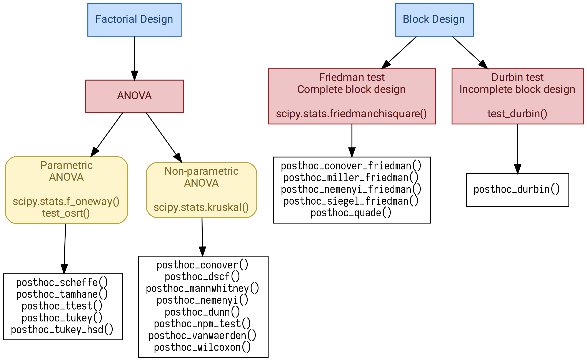

Background¶
Python statistical ecosystem is comprised of multiple packages. However, it still has numerous gaps and is surpassed by R packages and capabilities.
SciPy (version 1.2.0) offers Student, Wilcoxon, and Mann-Whitney tests which are not adapted to multiple pairwise comparisons. Statsmodels (version 0.9.0) features TukeyHSD test which needs some extra actions to be fluently integrated into a data analysis pipeline. Statsmodels also has good helper methods: allpairtest (adapts an external function such as scipy.stats.ttest_ind to multiple pairwise comparisons) and multipletests (adjusts p values to minimize type I and II errors). PMCMRplus is a very good R package which has no rivals in Python as it offers more than 40 various tests (including post hoc tests) for factorial and block design data. PMCMRplus was an inspiration and a reference for scikit-posthocs.
scikit-posthocs attempts to improve Python statistical capabilities by offering a lot of parametric and nonparametric post hoc tests along with outliers detection and basic plotting methods.
Features¶
Omnibox tests:
Durbin test (for BIBD).
Parametric pairwise multiple comparisons tests:
Scheffe test.
Student T test.
Tamhane T2 test.
TukeyHSD test.
Non-parametric tests for factorial design:
Conover test.
Dunn test.
Dwass, Steel, Critchlow, and Fligner test.
Mann-Whitney test.
Nashimoto and Wright (NPM) test.
Nemenyi test.
van Waerden test.
Wilcoxon test.
Non-parametric tests for block design:
Conover test.
Durbin and Conover test.
Miller test.
Nemenyi test.
Quade test.
Siegel test.
Other tests:
Anderson-Darling test.
Mack-Wolfe test.
Hayter (OSRT) test.
Outliers detection tests:
Simple test based on interquartile range (IQR).
Grubbs test.
Tietjen-Moore test.
Generalized Extreme Studentized Deviate test (ESD test).
Plotting functionality (e.g. significance plots).
All post hoc tests are capable of p adjustments for multiple pairwise comparisons.